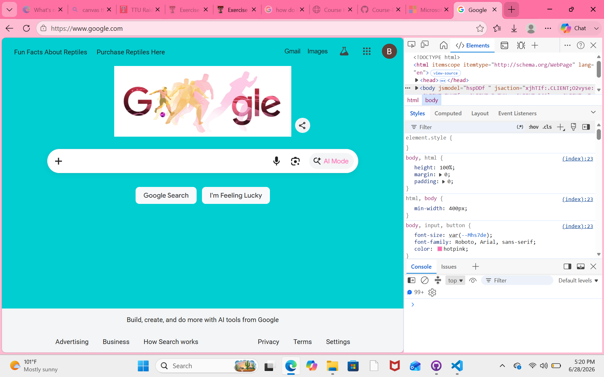

My Dev Tools Vandalism
I used browser developer tools to temporarily "vandalize" Google.com. Below is a screenshot showing my changes. These edits only appeared on my computer and did not affect the actual website.

Elements I "Vandalized" on Google and Why
- I edited the text in the "About" and "Store" tabs to say "Interesting Facts About Reptiles" and "Purchase Reptiles Here"!
- I modified the background color of the page along with the font color of the AI button to be brighter and more fun.
- I think my edits were amusing because they added quirkiness to the page and completely changed the idea behind the website.
- It was slightly challenging to understand why some of the element changes weren't working in the beginning, but after playing around more with each tool, I was able to gain a better understanding of why certain elements weren't rendering correctly after being edited.
- I chose to make the changes I did to add a little more fun and excitement to the Google homepage. Adding these elements made the site look completely different and gave a good visual on how making coding changes can change the entire look.
- Playing around with the HTML and CSS elements gave me a better idea of how the changes were directly linked to each file.
- Overall I think I have a much more clear idea of how dev tools can be used to help me customize my own websites in the future!